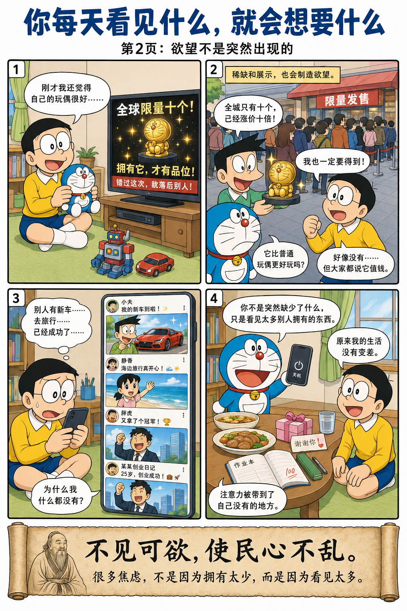
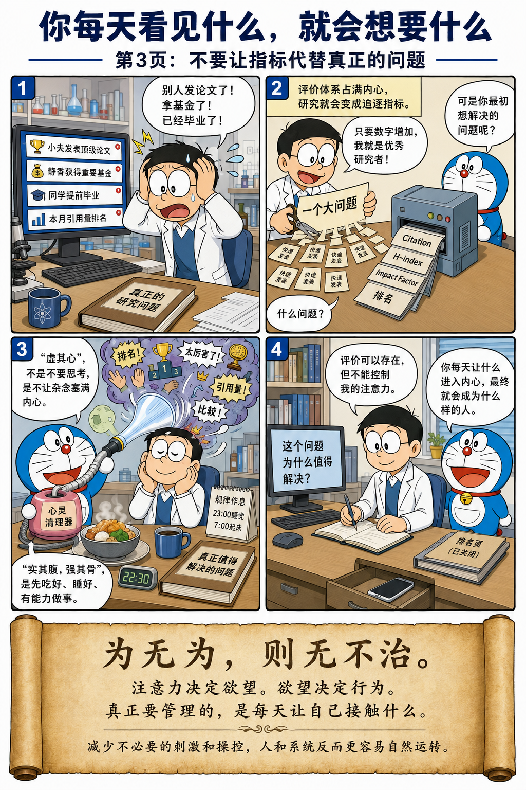

老子先问环境，再谈治理
不尚贤，使民不争；
不贵难得之货，使民不为盗；
不见可欲，使民心不乱。
是以圣人之治，虚其心，实其腹；弱其志，强其骨。
常使民无知无欲，使夫知者不敢为也。
为无为，则无不治。
少制造刺激，人就少一点乱
不要刻意吹捧某些人，人们就不会为了名声拼命争斗。不要过度强调稀有的财富，人们就不会为了得到它去偷盗。不要天天展示那些让人眼红的东西，人心自然不会浮躁。
所以，好的管理者会让人的内心少一些杂念，让人的生活有保障，减少无意义的欲望竞争，增强身体和能力。最终，人们不会因为各种欲望而失去理性。顺应规律去治理，很多事情会自然运转起来。
环境先改，行为才会跟着变



人的行为，是环境塑造的
这一章其实只有一句话：人的行为，是环境塑造的。老子几乎从来不急着责怪人，他更关心的始终是：是什么环境，让人变成现在这样？
环境 → 欲望 → 行为
前三句话连起来，正好构成一条非常漂亮的因果链。环境不断制造刺激，欲望被不断放大，行为就顺着欲望走。治理真正该处理的，是前面那一层环境。
奖励机制在塑造竞争方式
如果一个公司天天宣传“年度 Top 1”“最佳员工”“必须卷赢别人”，员工自然会开始内卷、抢功劳、隐藏信息。这样的后果并不神秘，因为环境已经把欲望的方向写好了。
这件事和人品无关，和机制直接相关。奖励机制强调什么，组织成员就会朝什么方向用力。今天经济学和组织行为学一直在研究的，正是这类问题。
很多欲望，是被制造出来的
“不贵难得之货”放到今天，几乎一眼就能看懂。为什么球鞋会有人排队？为什么 NFT 曾经疯狂？为什么 Labubu 会被炒到几万元？核心原因都很像：它被包装成稀缺。
人们追逐的往往不是实际用途，而是被社会赋予的价值感。需求并不总是自然生成，很多时候，它是被不断暗示、不断放大的。老子两千五百年前已经看到了这一层。
看见太多，也会制造焦虑
“不见可欲”放在今天，可以直接翻译成一句非常现代的话：少刷短视频。你本来没有想买车，结果天天看到别人提车；没有想旅游，结果天天看到别人去冰岛；没有想创业，结果天天看到别人融资。焦虑就在一次次展示里长出来了。
心理学今天把这种现象叫作社会比较。很多欲望并不来自内心深处，而是来自不断被投喂、不断被比较的环境。注意力决定欲望，欲望决定行为。
先让人活得稳，再谈大道理
“虚其心，实其腹”最容易被误解。顺着上下文去看，老子一直在讲如何减少外界刺激对人的牵引。“虚其心”是在说少一点执念、少一点被欲望塞满；“实其腹”则非常务实，意思是先让人吃饱、睡好、活下去。
所以这一章一点也不空泛。它对治理的要求非常现实：生活要有保障，身体和能力要能支撑日常秩序，心里要少一些被外部制造出来的躁动。每天保持充足的睡眠和健康的饮食，吃够蛋白质和蔬菜，又有什么难关是过不去的呢？
不要让评价体系代替研究本身
很多人都特别容易落进这一章说的问题里：别人发了 Nature，别人中了基金，别人已经毕业，于是每天都在比较。真正值得做的问题，反而慢慢被挤到后面去了。
Citation、H-index、Impact Factor、排名当然都重要，它们是现代学术系统的一部分。但当注意力被这些指标完全占满，研究就会变成为了指标而研究。老子在提醒的，其实正是这一点：评价体系应当服务问题，不能代替问题本身。
真正该管理的，是自己接触什么
这一章最锋利的一句，其实是“不见可欲，使民心不乱”。很多焦虑并不是因为拥有得太少，而是因为看见了太多别人拥有的东西。
注意力决定欲望，欲望决定行为。真正需要管理的，不只是行为，还有每天让自己接触什么。
“为无为，则无不治”落到今天，并不神秘。它是在说：顺着人的心理规律、顺着环境塑造行为的规律去治理，很多事情就会比一味加码控制更顺。